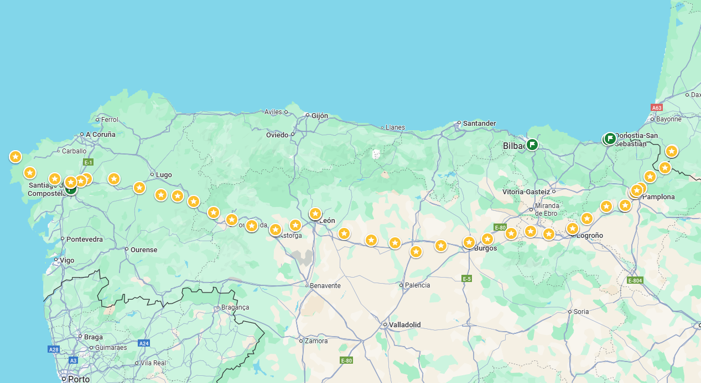
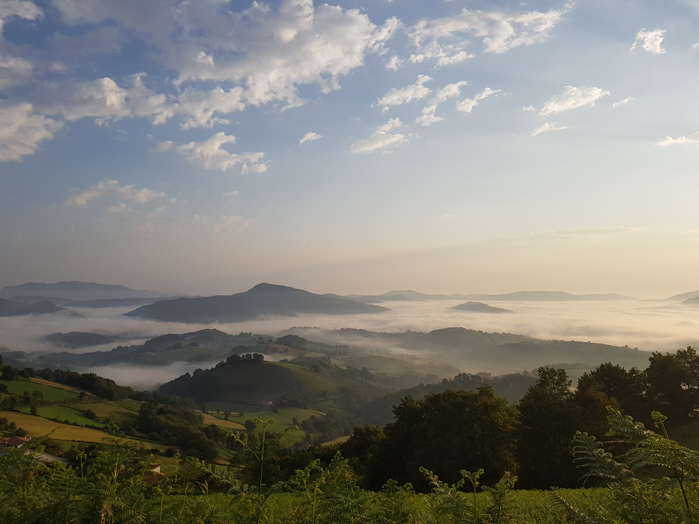
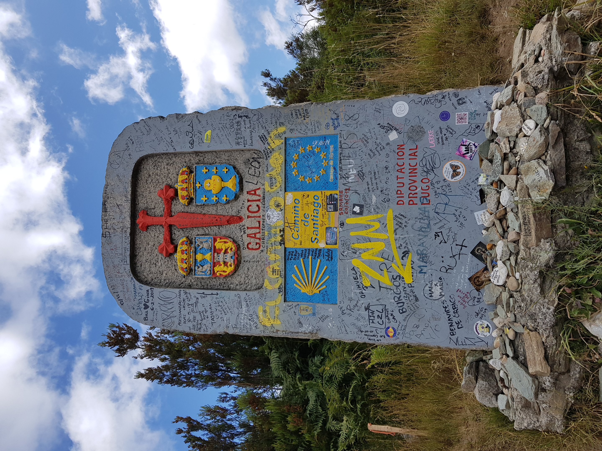

제 인생자랑 최고봉은 2019년 스페인에 산티아고 순례자의 길을 갔다온 겁니다.
42일 간 걸었고, 약 900km를 걸었습니다.
여러분도 할 수 있습니다. 여름 스페인 강추
노란 점이 갔던 곳 위치를 찍은 거에요
첫날 피레네 산맥 헉헉대며 올라가서 새벽 일출때 찍은 사진입니다. 아직 프랑스

순례길 상징인 가리비 조개를 저렇게 표현해요.
노란색과 청색 조합이 이쁘고 곳곳에 저렇게 장식되어 있습니다.
방문하는 숙소 등에서 스탬프를 찍어야, 내가 이 만큼 걸었다를 증명할 수 있어요.
거짓말 하려면 할 수 있는데, 돈 내고 여행와서...그렇게까지?
이렇게 비석이 멋있는 곳도 많습니다